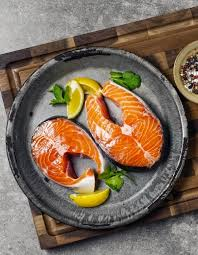

Hello, I'm Mathilde❤️

Salut! Je suis étudiante à l'ESSEC Business School. Je suis à la recherche active d'un stage de 3 mois (du 17 mais au 13 août 2021) dans le domaine de la vente ou de l'achat. Je suis dynamique, créative et motivée à faire partie de votre équipe !
Découvrez ma formationMa première passion est : la cuisine
J'ai découvert de l'intérêt pour la nutrition et la cuisine pendant le premier confinement. J'ai découvert tous types de recettes et aujourd'hui, alors que je vis seule ça me rend complètement autonome. D'autant plus que je mange équilibré et suivant un régime cétogène et un jeûne intermittent. Si un grande gourmande comme moi est capable de cet explois alors c'est que je serais aussi capable de grandes choses dans votre entreprise.
Ma deuxième passion est : les langues
Quand j'étais en primaire, ma mère m'avait inscrite aux cours d'allemand dès le CE2. J'ai été en classe bilingue en 6ème, en euro-anglais en 4ème, en Abibac au lycée avec une option LV3. Les langues m'ont toujours accompagnées et aujourd'hui je ne pourrais pas vivre sans, c'est pourquoi je vise à une carrière internationale. J'ai appris 4 langues étrangères au total tout au long de mon cursus (anglais, allemande, italien, arabe) et je compte encore développer mon pannel.
Ma troisième passion est : les voyages
Depuis que je suis petite, je suis partie tous les ans en vacances à l'étranger. J'ai donc depuis toujours une capacité d'ouverture à la culture d'autrui. Avec mes parents nous avons visité près de 10 pays euopéens. Mais j'ai aussi voyagé seule : 6 mois de scolarité en Allemagne, une semaine de vacances aux Etats-Unis, un voyage scolaire en Angleterre. Mon prochain objectif? L'Orient !